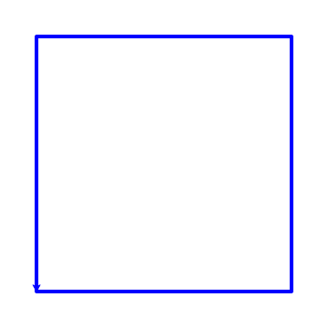
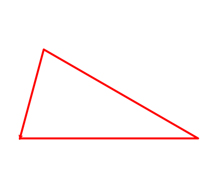
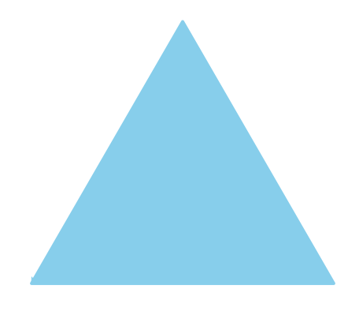
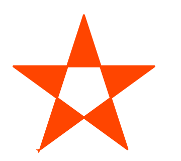
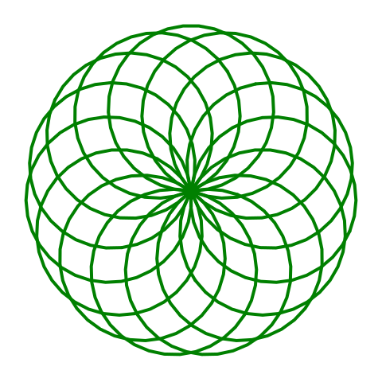

Сегодня узнаем как сделать рисунок при помощи программирования. Давайте познакомимся с модулем turtle в Python. Мы научимся создавать рисунки и экспериментировать.

Будем использовать команды Turtle на языке программирования Python.
Turtle - это черепашка. Перемещаясь по экрану она рисует линии. Мы можем давать ей команды - двигайся вперёд
(forward), повернись направо (right) или налево (left), и т.д.
Давай нарисуем простые фигуры.
У квадрата 4 стороны, соединенные под прямым углом. Чтобы его нарисовать, нам нужен алгоритм:
Используем также команду color чтобы выбрать цвет.
Вот код:
# нарисовать синий квадрат
color("blue")
forward(350)
left(90)
forward(350)
left(90)
forward(350)
left(90)
forward(350)
Результат:
Треугольник может быть правильной или неправильной формы. Нарисовав первую сторону, будем поворачиваться и двигаться прямо еще два раза. Подберём углы и длины сторон так, чтобы треугольник замкнулся:
# нарисовать красный треугольник
color("red")
forward(450)
left(150)
forward(450)
left(102)
forward(238)
Результат:
Треугольник правильной формы называется равносторонний. В нём все углы и стороны равны. Как его нарисовать?
Нужно поворачиваться на один и тот же угол, равный 120 градусов. Заведём переменную angle = 120.
Используем команды begin_fill и end_fill чтобы закрасить треугольник.
Вот что получается:
# нарисовать голубой правильный треугольник
color("SkyBlue")
angle = 120
begin_fill()
forward(480)
left(angle)
forward(480)
left(angle)
forward(480)
end_fill()
Реузультат:
# нарисовать звезду
color("OrangeRed")
begin_fill()
for _ in range(5):
forward(350)
left(144)
end_fill()
Реузультат:
Чтобы нарисовать узор, будем повторять один и тот же элемент много раз.
Для повторения команд используем цикл for.
# нарисовать узор
color("green")
for _ in range(15):
circle(130)
left(24)
Реузультат:
Подумай какие нужны команды чтобы сделать такие рисунки: